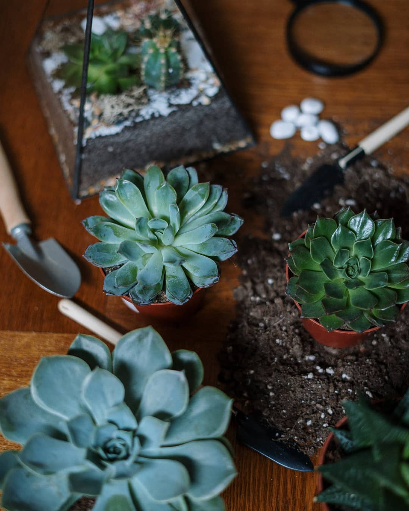
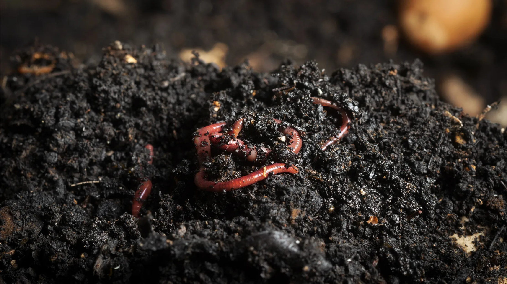
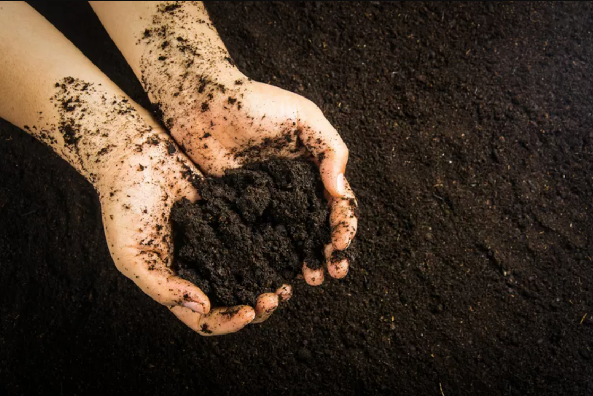
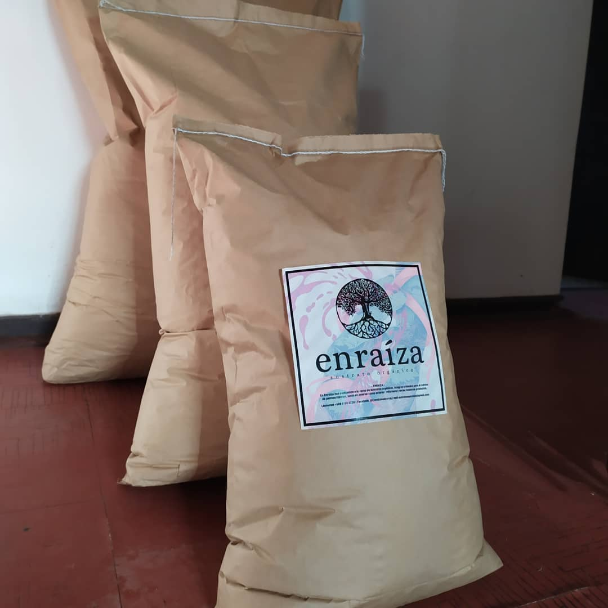

Nosotros
¿Quiénes somos?
Mision
Nuestra misión es proporcionar a los entusiastas de la jardinería y la horticultura sustratos de alta calidad,
elaborados de manera sostenible, que mejoren el crecimiento y la salud de las plantas. Nos comprometemos a innovar
constantemente en nuestras formulaciones para adaptarnos a las necesidades específicas de cada tipo de planta,
ofreciendo soluciones prácticas y eficaces que faciliten una jardinería más verde y productiva.
Visión
Ser líderes en el mercado de sustratos para plantas, reconocidos por nuestra calidad, sostenibilidad y compromiso
con el medio ambiente. Aspiramos a expandir nuestra presencia a nivel nacional e internacional, fomentando
prácticas de jardinería más ecológicas y sustentables. Queremos inspirar y educar a nuestra comunidad sobre la
importancia de utilizar productos que no solo beneficien sus cultivos, sino que también protejan nuestro planeta.

Un poco de nuestra historia
Enraiza es un emprendimiento familiar, pioneros en el trabajo con lombrices californianas en Chile desde los años
80 por el abuelo de la familia Omar Valdés Garrido, quién transmitió este conocimiento de generación en
generación y fomentó su utilización a todo su entorno.
En primera instancia, nos dedicamos a la fabricación de humus de lombriz, reciclando todo tipo de material
orgánico, para dar vida al abono natural más poderoso conocido hasta la actualidad.


Luego de obtener nuestro preciado humus de lombriz, realizamos una mezcla rigurosa con insumos agricolas, tales
como: fibra de coco, compost y perlita.
Siendo estos cuatro insumos, nuestros compuestos principales para la creación de sustrato Enraíza.
